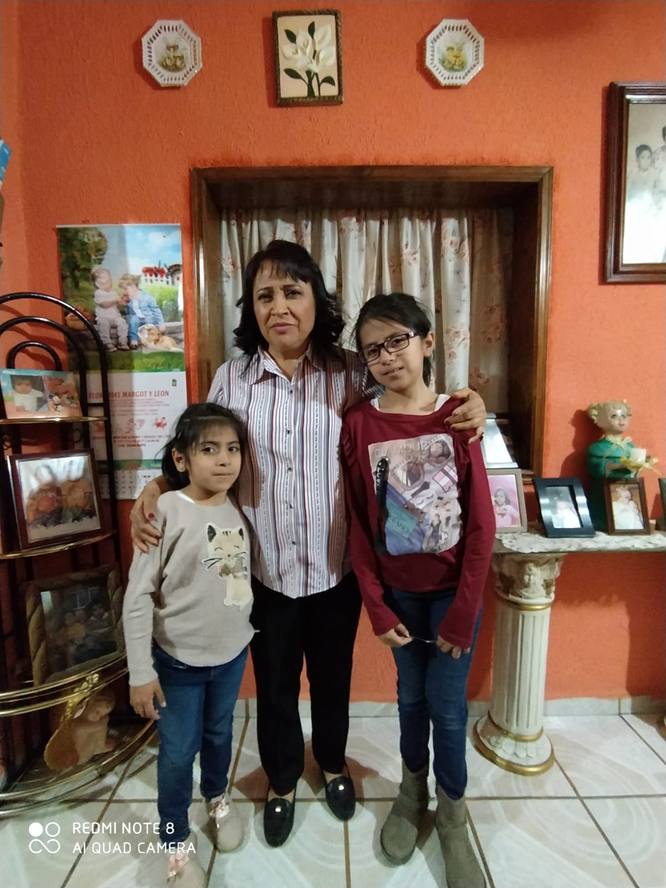

Mi Familia

Mi familia consta de 6 personas incluyendome yo Hector Eduardo Balderas Sanchez, que naci el 11 de octubre del 2004 en la ciudad de león, soy el mayor de 4 hijos esto significa que tengo 3 hermanas menores, la mayor se llama natalia carolina, la que sigue se llama Dania Saray y las mas pequeña es emma liseth y finalmente estan mi mamá que es maribel sanchez carpio y mi papá que es Hector Balderas mata
| Edad | Parentesco | Nombre |
|---|---|---|
| 42 | Papá | Hector Balderas Mata |
| 42 | Mamá | Maribel Sanchez Carpio |
| 18 | Hijo | Hector Eduardo Balderas Sanchez |
| 15 | Hija | Natalia Carolina Balderas Sanchez |
| 12 | Hija | Dania Saray Balderas Sanchez |
| 10 | Hija | Emma liseth Balderas Sanchez |
Lugares que quiero visitar con mi familia
Lugares que no quiero visitar con mi familia